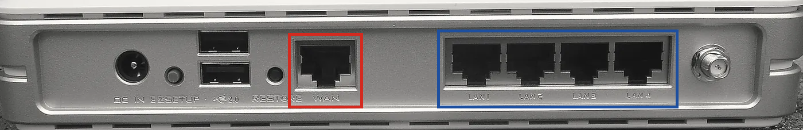

Bài 01 nhắc tới hai chữ "cùng mạng" nhiều lần. Máy cùng WiFi thì gọi được
192.168.10.38, còn người đang ở nhà họ thì không gọi được. Nhưng thế nào thì gọi là cùng mạng? Phụ lục
này trả lời câu đó, bắt đầu từ cục phát WiFi ở nhà bạn.
Câu hỏi của phụ lục
Có lần mình dạy một người bạn về server và port. Lúc đó mình đang giải thích về localhost, vì sao máy mình gọi
localhost:8080 được mà máy bạn ấy lại không. Giải thích xong, mình chỉ cách để hai người ngồi cùng một
mạng gọi được port 8080 ở máy bên kia. Tới đó bạn ấy hỏi tiếp: khác mạng thì sao? Mình không biết, nên tra trên
mạng, và thấy người ta bảo dùng VPN server. Nhưng vì sao khác mạng lại phải cần tới nó, và làm thế nào, thì mình
vẫn chưa hiểu. Mà muốn hiểu "khác mạng" thì trước hết phải hiểu "cùng mạng", nên phụ lục này đi qua ba câu hỏi theo
thứ tự sau:
- Thế nào là hai máy cùng mạng, và máy tính dựa vào đâu để biết máy kia cùng mạng với nó?
- Các tên PAN, LAN, MAN, WAN khác nhau ở đâu?
- Switch, access point, router, modem mỗi thứ làm việc gì, và cục phát WiFi ở nhà là thứ nào trong số đó?
Để trả lời, phụ lục dùng lại ba thứ đã học ở Bài 01 là giao diện mạng, dải mạng riêng và firewall.
Cùng mạng là cùng nối vào một cục phát WiFi
Thế nào là hai máy cùng mạng? Bắt đầu từ thứ có sẵn trong nhà đã, là cục phát WiFi mà nhà mạng lắp cho bạn. Laptop của bạn nối vào nó bằng sóng WiFi, điện thoại cũng vậy, còn máy bàn thì có thể cắm cáp vào một cổng ở mặt sau của nó. Ba máy đó cùng mạng với nhau, vì cả ba cùng nối vào một cục phát WiFi. Máy của một người ở nhà khác thì nối vào cục phát WiFi của nhà họ, nên nó nằm ở một mạng khác.
Vì sao chuyện nối vào cục nào lại quan trọng? Vì nó quyết định gói tin phải đi đường nào. Khi điện thoại gửi một gói tin cho laptop, gói tin đi từ điện thoại vào cục phát WiFi, rồi cục phát WiFi chuyển nó sang laptop, tức là nó không hề ra khỏi nhà. Còn khi máy của người ở nhà khác gửi cho laptop bạn thì gói tin phải ra khỏi cục phát WiFi nhà họ, đi qua Internet, rồi mới tới cục phát WiFi nhà bạn và xin vào.
mạng nhà bạn mạng nhà người khác
┌──────────────────────────────┐ ┌──────────────────────────────┐
│ laptop điện thoại │ │ máy của người ở nhà khác │
│ └──────┐ ┌──────┘ │ │ │ │
│ cục phát WiFi │ │ cục phát WiFi │
│ (trong có router) │ │ (trong có router) │
└───────────────┬──────────────┘ └───────────────┬──────────────┘
└────────────── Internet ─────────────┘Trong cục phát WiFi, bộ phận lo việc cho gói tin ra khỏi nhà và vào nhà tên là router. Bài 00 đã gặp nó rồi, ở đó router là thiết bị nối các mạng với nhau, và router đầu tiên trên đường đi của gói tin chính là cục phát WiFi trong nhà. Vì router nối mạng nhà bạn với bên ngoài nên nó cũng là chỗ mạng nhà bạn kết thúc. Mọi máy ở phía trong router là mạng nhà bạn, còn mọi thứ ở phía ngoài nó là mạng khác.
Tới đây thì nói lại được "cùng mạng" cho chính xác. Hai máy cùng mạng khi gói tin đi từ máy này sang máy kia mà không phải đi qua router. Điện thoại và laptop trong nhà bạn cùng mạng, vì gói tin giữa hai máy đó không ra khỏi nhà. Laptop bạn và máy của người ở nhà khác thì khác mạng, vì gói tin giữa hai máy đó phải đi qua ít nhất hai router, một của nhà họ và một của nhà bạn.
Nói thêm về tên gọi cho khỏi lẫn. Bài 01 gọi cả cục phát WiFi là router, vì bài đó chỉ cần tới việc của router. Phụ lục này thì gọi tách ra, cục phát WiFi là cả cái hộp, còn router là một bộ phận bên trong nó. Mấy bộ phận còn lại sẽ lần lượt có tên ở các tab sau.
Máy tính dựa vào đâu để biết máy kia cùng mạng
Người thì nhìn cục phát WiFi là biết, còn máy tính thì dựa vào đâu để biết máy đích có cùng mạng với nó không? Nó
dựa vào địa chỉ IP. Cục phát WiFi cấp địa chỉ cho mọi máy nối vào nó, việc mà Bài 01 gọi là DHCP, và nó cấp sao cho
các địa chỉ trong nhà giống nhau ở phần đầu. Ví dụ laptop nhận 192.168.10.38 còn điện thoại nhận
192.168.10.21, ba số đầu giống nhau và chỉ số cuối khác nhau. Vậy máy nào có địa chỉ mở đầu bằng
192.168.10 thì cùng mạng với laptop.
Nhưng sao lại là ba số đầu mà không phải hai số hay một số? Vì lúc cấp địa chỉ, cục phát WiFi cấp kèm một con số
nữa, nói rõ phần giống nhau dài tới đâu. Con số đó tên là subnet mask (mặt nạ mạng con). Ở mạng trong nhà nó thường
là 255.255.255.0, nghĩa là 24 bit đầu của địa chỉ, tức ba số đầu, là phần chung của cả mạng. Bài 01 đã
gặp cách ghi /8 cho một dải có 8 bit đầu cố định, và ghi theo cách đó thì mạng nhà bạn là
192.168.10.0/24.
Laptop dùng phần chung đó mỗi lần sắp gửi một gói tin. Lúc ấy nó so địa chỉ đích với địa chỉ của chính nó. Nếu phần đầu giống nhau, như khi gửi tới điện thoại, thì máy đích ở cùng mạng và laptop gửi thẳng cho máy đó. Nếu phần đầu khác nhau, như khi gửi tới một server ngoài Internet, thì laptop không đi tìm máy đích nữa mà giao gói tin cho router, để router lo phần đường còn lại. Địa chỉ của router mà laptop dùng vào việc này có tên là default gateway (cổng ra mặc định), và nó cũng do cục phát WiFi cấp cho laptop.
Xem trên máy bạn
Subnet mask và default gateway đều xem được trên máy, vì cả hai nằm trong output của ipconfig, lệnh
mà Lab 3 của Bài 01 đã dùng để tìm địa chỉ WiFi. Lần đó chỉ cần dòng
IPv4 Address, còn hai dòng ngay dưới nó thì chưa dùng tới. Mục của card WiFi có dạng như sau; địa chỉ
ở đây là ví dụ, nên máy bạn sẽ in số khác.
Wireless LAN adapter Wi-Fi:
IPv4 Address. . . . . . . . . . . : 192.168.10.38
Subnet Mask . . . . . . . . . . . : 255.255.255.0
Default Gateway . . . . . . . . . : 192.168.10.1Dòng Subnet Mask cho biết ba số đầu là phần chung, nên mọi máy có địa chỉ dạng
192.168.10.x đều cùng mạng với máy này. Dòng Default Gateway là địa chỉ của router trong
cục phát WiFi. Còn chữ LAN ở dòng đầu tiên là một trong mấy cái tên của mạng, và tab sau nói về các tên đó.
Hai máy cùng mạng khi gói tin đi giữa chúng không phải qua router. Máy tính biết điều đó bằng cách so phần đầu của hai địa chỉ IP.
Dòng đầu của ipconfig có chữ LAN. Đó là một trong bốn cái tên người ta hay dùng
để gọi mạng, cùng với PAN, MAN và WAN. Bốn cái tên ấy khác nhau ở đâu?
Tên đặt theo độ rộng
Bốn cái tên chỉ khác nhau ở một điểm là mạng rộng tới đâu. Cả bốn đều kết thúc bằng "Area Network", nghĩa là mạng của một vùng, và chữ đứng trước cho biết vùng đó rộng cỡ nào. Personal là quanh một người, Local là một khu nhỏ như căn nhà, Metropolitan là một thành phố, còn Wide là một vùng rộng hơn nữa. Vì chỉ nói về độ rộng nên các tên này không cho biết mạng nối bằng dây hay bằng sóng, cũng không cho biết nó nhanh hay chậm. Bảng 1 xếp bốn tên từ hẹp tới rộng, và thêm một tên thứ năm hay gặp là WLAN.
| Tên | Viết tắt của | Rộng cỡ nào | Ví dụ |
|---|---|---|---|
| PAN | Personal Area Network | Quanh một người, vài mét | Tai nghe Bluetooth nối với điện thoại |
| LAN | Local Area Network | Một căn nhà, một tầng, một tòa nhà | Các máy nối vào cùng một cục phát WiFi |
| WLAN | Wireless LAN | Như LAN, nhưng nối bằng sóng | Các máy bắt cùng một WiFi |
| MAN | Metropolitan Area Network | Một thành phố | Mạng cáp của nhà mạng trong một thành phố |
| WAN | Wide Area Network | Một vùng, một nước, nhiều nước | Đường truyền nối các thành phố, cáp quang biển |
Trong năm tên đó, hai tên gặp nhiều nhất là LAN và WAN, nên từ đây tới cuối phụ lục chỉ dùng hai tên này. PAN và MAN thì biết để gặp không thấy lạ là đủ.
LAN và WAN gặp nhau ở router
LAN và WAN có định nghĩa chính thức trong RFC 1983, bảng thuật ngữ của những người viết chuẩn cho Internet. Bảng đó định nghĩa hai tên như sau.
Local Area Network (LAN): A data network intended to serve an area of only a few square
kilometers or less.
Wide Area Network (WAN): A network, usually constructed with serial lines, which covers a
large geographic area.
Hai định nghĩa trên chỉ nói về độ rộng, vậy ở nhà bạn chỗ nào là LAN và chỗ nào là WAN? Các máy nối vào cục phát WiFi nhà bạn làm thành một LAN. Còn đường truyền từ nhà bạn ra nhà mạng, cùng với mạng của nhà mạng trải khắp các thành phố, là WAN. Hai bên gặp nhau ở router trong cục phát WiFi, vì router có một phía nối vào LAN và một phía nối ra WAN. Như vậy LAN nhà bạn chính là "mạng nhà bạn" ở tab trước, tức các máy nằm ở phía trong của cùng một router.
LAN WAN LAN
một căn nhà mạng của nhà mạng một văn phòng
┌──────────────┐ ┌──────────────┐
│ laptop │ │ máy bàn │
│ điện thoại │ │ máy in │
│ router ├───────── đường truyền đi xa ──────────┤ router │
└──────────────┘ └──────────────┘
vài chục mét vài km tới hàng nghìn km vài chục métỞ nhà thì một LAN cũng là một mạng, còn ở công ty lớn thì chưa chắc. Cả tòa nhà công ty là một LAN nếu chỉ xét độ rộng, nhưng bên trong người ta có thể đặt thêm router để chia nó thành nhiều mạng, ví dụ mỗi phòng ban một mạng. Khi đó hai máy ngồi cùng tòa nhà vẫn có thể khác mạng với nhau. Muốn biết chắc thì vẫn phải so địa chỉ như ở tab trước.
Internet và WiFi nằm ở đâu trong bảng
Bảng 1 không có dòng nào tên là Internet, vậy Internet là loại mạng nào? Internet là rất nhiều mạng nối với nhau bằng router, nên nó không nằm gọn trong một dòng nào của bảng. RFC 1983 cũng định nghĩa như vậy, chữ "internet" trong đó là "a collection of networks interconnected with routers", còn Internet viết hoa là tập hợp lớn nhất thuộc kiểu ấy. Các mạng trong tập hợp đó nối với nhau bằng những đường WAN, ví dụ đường cáp quang biển đã gặp ở Bài 00.
Còn WiFi thì sao, nó có phải một loại mạng không? WiFi là cách nối máy vào LAN bằng sóng thay cho cáp, và một LAN nối bằng sóng được gọi là WLAN như ở Bảng 1. Vì chỉ khác nhau ở cách nối, máy bắt WiFi và máy cắm cáp vào cùng một cục phát WiFi vẫn cùng mạng với nhau.
Mỗi cách nối có một chuẩn riêng. Chuẩn cho cách nối bằng cáp tên là Ethernet (IEEE 802.3), và đó là lý do
ipconfig gọi cổng cắm cáp mạng là "Ethernet adapter". Chuẩn cho cách nối bằng sóng là IEEE 802.11, còn
Wi-Fi là nhãn hiệu mà tổ chức Wi-Fi Alliance gắn cho những thiết bị làm theo chuẩn đó. Vậy WiFi là tên của một
cách nối, chưa phải tên của một thiết bị. Thiết bị phát ra sóng WiFi có tên riêng, và tab sau nói về nó cùng ba
thiết bị khác.
Tab đầu coi cục phát WiFi như một khối. Bên trong nó là bốn thiết bị, mỗi thiết bị làm một việc. Ở văn phòng thì bốn thiết bị ấy thường đứng riêng, nên dễ nhất là xem từng cái ở đó trước.
Switch: nối các máy trong một mạng
Một văn phòng có ba mươi máy tính, vậy nối chúng thế nào để máy nào cũng gửi được gói tin cho máy nào? Người ta cắm mỗi máy một sợi cáp vào cùng một thiết bị có nhiều cổng, tên là switch (bộ chuyển mạch). Switch nhận gói tin ở một cổng rồi đẩy nó ra đúng cổng có máy đích. Muốn đẩy đúng cổng thì switch phải biết máy nào đang cắm ở cổng nào.

Switch biết máy nào ở cổng nào nhờ đâu? Nhờ một loại địa chỉ khác với địa chỉ IP, tên là địa chỉ MAC. Địa chỉ IP
thì do
router cấp và đổi theo mạng, như Bài 01 đã thấy. Địa chỉ MAC thì gắn với chính cái card mạng, thường do nhà sản xuất
ghi sẵn, dài 48 bit và viết thành sáu cặp chữ số như 00-00-5e-00-53-2a. Vậy mỗi card mạng có hai địa
chỉ, và switch chỉ dùng địa chỉ MAC.
Bài 00 nói mỗi gói tin có phần đầu ghi địa chỉ nơi gửi và nơi nhận, và đó là địa chỉ IP. Địa chỉ MAC thì nằm ở chỗ khác. Trước khi đi lên dây hay lên sóng, gói tin được bọc thêm một lớp vỏ, và lớp vỏ này ghi địa chỉ MAC của nơi gửi và nơi nhận. Switch chỉ đọc lớp vỏ đó. Khi thấy một gói tin đi vào cổng số 3, switch đọc địa chỉ MAC nơi gửi trên vỏ và nhớ rằng máy mang địa chỉ ấy nằm ở cổng số 3. Lần sau có gói tin gửi tới địa chỉ ấy thì switch đẩy nó ra cổng số 3.
Còn laptop thì lấy địa chỉ MAC của máy đích ở đâu để ghi lên vỏ? Nó hỏi cả mạng. Laptop gửi cho mọi máy trong
mạng một câu hỏi, đại ý "ai đang giữ địa chỉ 192.168.10.21?", và máy đang giữ địa chỉ đó trả lời bằng
địa chỉ MAC của mình. Câu hỏi này chỉ tới được các máy cùng mạng, vì router không chuyển nó sang mạng khác.
Access point: đưa máy không dây vào mạng

Switch nối các máy bằng cáp, vậy laptop và điện thoại không cắm cáp thì vào mạng bằng gì? Bằng một thiết bị tên là access point (điểm truy cập, viết tắt là AP). Đây chính là thiết bị phát ra sóng WiFi mà tab trước còn để ngỏ. Access point đứng giữa sóng và dây. Gói tin từ laptop bay tới nó bằng sóng, rồi nó đẩy gói tin đó vào sợi cáp nối nó với switch. Nó cũng chỉ đọc địa chỉ MAC trên lớp vỏ như switch, nên máy bắt WiFi và máy cắm cáp vẫn nằm chung một mạng. Ở văn phòng, access point thường là một cái đĩa trắng gắn trên trần hoặc trên tường như Ảnh 2.
Router: nối mạng này với mạng khác
Switch và access point chỉ chuyển gói tin trong một mạng, vậy gói tin muốn sang mạng khác thì nhờ thiết bị nào? Nhờ router, thiết bị đã gặp ở tab đầu. RFC 1983 định nghĩa router là "a device which forwards traffic between networks", tức thiết bị chuyển gói tin giữa các mạng. Cũng theo định nghĩa đó, router chọn đường dựa trên "network layer information", ở đây là địa chỉ IP.
Router khác switch ở hai chỗ, và cả hai đều nằm trong định nghĩa vừa trích. Thứ nhất, switch nằm trong một mạng, còn router đứng giữa hai mạng. Thứ hai, switch chỉ đọc địa chỉ MAC trên lớp vỏ, còn router mở lớp vỏ ra và đọc địa chỉ IP bên trong để biết gói tin cần sang mạng nào. Vì đứng giữa hai mạng nên router có ít nhất hai giao diện mạng, mỗi giao diện nối vào một mạng và mang một địa chỉ IP của mạng đó, giống cái card mạng hai cổng ở Bài 01.

Hai nhóm cổng ở Ảnh 3 chính là hai phía của router. Địa chỉ của nó ở phía LAN là dòng
Default Gateway mà ipconfig in ra ở tab đầu, còn phía WAN mang một địa chỉ khác do nhà
mạng cấp.
Modem: đổi tín hiệu của đường truyền
Thiết bị cuối cùng là modem. Nó hay bị gọi lẫn với router vì hai thứ thường nằm chung một hộp, nhưng việc của nó khác hẳn. Modem lo việc ở đường truyền. Đường truyền từ nhà mạng vào nhà là cáp quang, cáp đồng trục hoặc dây điện thoại, và tín hiệu chạy trên các đường ấy khác với tín hiệu chạy trên sợi cáp mạng trong nhà. Modem đổi qua lại giữa hai loại tín hiệu đó, còn việc chọn đường cho gói tin thì nó không làm, và nó cũng không đọc địa chỉ nào. Modem dùng cho cáp quang có tên riêng là ONT (Optical Network Terminal).
Bảng 2 đặt bốn thiết bị cạnh nhau để so.
| Thiết bị | Nối cái gì với cái gì | Đọc gì để chuyển | Đứng giữa hai mạng |
|---|---|---|---|
| Switch | Các máy cắm cáp trong một mạng | Địa chỉ MAC | |
| Access point | Máy không dây với mạng có sẵn | Địa chỉ MAC | |
| Router | Mạng này với mạng khác | Địa chỉ IP | |
| Modem | Đường truyền của nhà mạng với cáp trong nhà | Không đọc gì, chỉ đổi tín hiệu |
Ở nhà thì chẳng ai mua riêng bốn thiết bị vừa kể. Cả bốn nằm chung trong cục phát WiFi mà nhà mạng lắp, và vì thế mỗi người gọi nó một tên, người thì gọi là modem, người thì gọi là router.
Trong cục phát WiFi có gì
Phần nào của cục phát WiFi là thiết bị nào? Mấy cổng LAN ở mặt sau là một switch. Ăng-ten, dù chìa ra ngoài hay giấu bên trong, là của access point. Cổng WAN, nơi cắm sợi dây đi ra nhà mạng, thuộc về router, và router đứng giữa cổng đó với switch và access point. Nếu sợi cáp quang cắm thẳng vào cục phát WiFi thì trong nó có cả modem. Còn nếu nhà bạn có hai hộp thì hộp nhỏ nhận cáp quang là modem, hộp có ăng-ten là ba thiết bị còn lại.
cục phát WiFi ở nhà
┌────────────────────────────────────────────────────┐
│ │
│ access point ───┐ │
│ (phát sóng) │ │
│ switch ──── router ──── modem ──────┼──── nhà mạng
│ │ │ │
│ mấy cổng LAN ───┘ cấp địa chỉ (DHCP) │
│ đổi địa chỉ (NAT) │
│ chặn chiều vào (firewall) │
└────────────────────────────────────────────────────┘
phía LAN: các máy trong nhà phía WANNgoài việc chuyển gói tin, router trong cục phát WiFi còn kiêm thêm ba việc, và Bài 01 đã nhắc tới cả ba. Việc thứ nhất là cấp địa chỉ IP cho các máy trong nhà bằng DHCP, kèm theo subnet mask và default gateway. Việc thứ hai là cho cả nhà dùng chung một địa chỉ công khai khi ra Internet. Việc này tên là NAT, và Lịch sử địa chỉ IP kể vì sao phải có nó. Việc thứ ba là làm firewall, tức kết nối từ trong nhà đi ra thì router cho qua, còn kết nối từ ngoài tự tìm vào thì router bỏ.
Hai chuyến đi qua cục phát WiFi
Ghép bốn thiết bị lại rồi thì dò được đường đi của gói tin trong hai chuyến hay gặp nhất. Chuyến thứ nhất là
chuyến của Bài 01, khi điện thoại cùng WiFi mở http://192.168.10.38:8080 để gọi app trên laptop.
- Điện thoại so địa chỉ đích với địa chỉ của nó, thấy phần đầu giống nhau, tức laptop ở cùng mạng.
- Điện thoại bọc gói tin trong lớp vỏ ghi địa chỉ MAC của laptop, rồi gửi nó bằng sóng tới access point.
- Access point và switch đọc lớp vỏ rồi đẩy gói tin tới laptop.
- Gói tin vào card WiFi của laptop. Từ đây là chuyện của ba điều kiện ở Bài 01.
Trong chuyến này gói tin có đi qua router không? Không, nó chỉ đi qua access point và switch, nên NAT và firewall của cục phát WiFi không can dự gì. Vì thế ở Bài 01, thứ duy nhất chặn được điện thoại là firewall trên chính laptop.
Chuyến thứ hai thì khác, vì lần này laptop mở một trang web ngoài Internet.
- Laptop so địa chỉ và thấy server không cùng mạng, nên nó bọc gói tin trong lớp vỏ ghi địa chỉ MAC của router.
- Access point và switch đọc lớp vỏ rồi đưa gói tin tới router.
- Router đổi địa chỉ nơi gửi, từ địa chỉ mạng riêng của laptop thành địa chỉ công khai của nhà bạn. Nó ghi nhớ lần đổi này rồi đẩy gói tin ra cổng WAN.
- Modem đổi tín hiệu, và gói tin đi vào mạng của nhà mạng, từ đó qua tiếp các router khác để tới server.
Còn chiều về thì sao? Khi server trả lời, router tra lại chỗ nó đã ghi nhớ ở bước 3 để biết gói tin trả lời là của laptop, rồi chuyển vào cho laptop. Nhưng nếu một người ở ngoài tự mở kết nối vào nhà bạn thì router không có gì để tra, vì trong nhà chưa máy nào gọi ra cho người đó, nên router bỏ gói tin. Đây là lý do người ở nhà khác không gọi được vào laptop bạn, kể cả khi họ biết địa chỉ công khai của nhà bạn.
Cùng WiFi mà vẫn không gọi được
Có khi nào hai máy bắt cùng một WiFi mà vẫn không gọi được nhau không? Có, và hay gặp nhất ở WiFi của quán cà phê, của khách sạn, và ở mạng "khách" (guest) của cục phát WiFi trong nhà. Access point ở những chỗ đó thường bật một tính năng chặn các máy không dây gửi gói tin cho nhau, mỗi hãng gọi tính năng này một tên như AP isolation hay client isolation. Khi nó bật thì máy nào cũng ra được Internet, nhưng không máy nào gọi được máy nào, và bên gọi thường thấy timeout vì không ai trả lời.
Vì thế, nếu làm Lab 3 của Bài 01 mà đã mở firewall, app đã listen 0.0.0.0 nhưng điện thoại vẫn không
vào được, thì thứ cần xem tiếp là hai máy có thật sự cùng mạng không. Cách xem là so phần đầu địa chỉ IP của hai
máy, rồi thử lại ở một WiFi không phải mạng khách.
Trước khi quay về hai chữ "cùng mạng" của Bài 01, có năm chỗ dễ nghĩ sai nên gom lại một lần.
Những chỗ dễ nghĩ sai
| Dễ nghĩ là | Đúng là | Xem lại |
|---|---|---|
| WiFi là Internet | WiFi chỉ là cách nối không dây vào mạng trong nhà. Rút sợi cáp quang ra thì WiFi vẫn còn và các máy trong nhà vẫn gọi được nhau, chỉ không ra được Internet | Internet và WiFi |
| Cùng mạng là cùng bắt một WiFi | Cùng mạng là gói tin tới được nhau mà không qua router. Máy cắm cáp và máy bắt WiFi của một cục phát WiFi vẫn cùng mạng | Cùng mạng |
| Switch và router là một thứ, cái nào nhiều cổng thì gọi là switch | Switch nối các máy trong một mạng và đọc địa chỉ MAC. Router nối hai mạng và đọc địa chỉ IP | Router |
| LAN là mạng có dây, WiFi là loại khác | Tên LAN chỉ nói mạng rộng cỡ nào. Mạng WiFi trong nhà cũng là LAN, nối bằng sóng | Tên đặt theo độ rộng |
| Modem là cái phát WiFi | Modem chỉ đổi tín hiệu của đường truyền. Phát WiFi là việc của access point | Trong cục phát WiFi |
Nối về Bài 01
Vậy hai chữ "cùng mạng" của Bài 01 nghĩa là gì? Nghĩa là hai máy nằm ở phía trong của cùng một router. Địa chỉ IP của chúng giống nhau ở phần đầu, và gói tin đi giữa chúng chỉ qua switch với access point. Khi hai máy cùng mạng thì gói tin tới được card WiFi của laptop bạn, và lúc ấy ba điều kiện của Bài 01 mới bắt đầu có nghĩa, gồm gọi đúng địa chỉ, firewall cho qua và có chương trình listen đúng địa chỉ.
Còn khi người gọi ở mạng khác thì chuyện gì xảy ra? Gói tin của họ bị chặn từ trước khi chạm tới laptop, và có
hai lý do. Lý do thứ nhất là 192.168.10.38 thuộc dải mạng riêng, nên
không router nào ngoài Internet chịu chuyển gói tin tới nó. Lý do thứ hai là địa chỉ công khai của nhà bạn thì
thuộc về router trong cục phát WiFi, mà router ấy bỏ mọi kết nối do người ngoài tự mở vào. Hai lý do đó trả lời nửa
"tại sao" trong câu hỏi của người bạn ở đầu phụ lục.
Nửa "làm thế nào" thì có ba lối. Lối thứ nhất là dặn router chuyển một port từ phía WAN vào thẳng laptop, gọi là port forwarding, và làm vậy thì app lộ ra cho cả Internet. Lối thứ hai là đưa app lên một máy có địa chỉ công khai, tức một server. Lối thứ ba là VPN, phần mềm mà Bài 01 giảng ở mục Khác mạng thì sao. Với VPN, hai máy cùng gọi ra một điểm chung ở ngoài Internet, là VPN server mà đầu phụ lục nhắc tới, rồi dùng chính hai kết nối đó làm một mạng ảo nối hai máy với nhau. Lối này qua được router của cả hai nhà, vì cả hai máy đều là bên gọi ra.
Nguồn đọc thêm
Chỉ gồm văn bản chuẩn gốc và tài liệu chính thức. Dùng để tra cứu, không cần đọc hết.
- RFC 1983 — Internet Users' Glossary (1996). Định nghĩa LAN, MAN, WAN, internet, router. rfc-editor.org/rfc/rfc1983
- IEEE 802 — nhóm làm chuẩn Ethernet (802.3) và nhóm làm chuẩn LAN không dây (802.11). ieee802.org/3 · ieee802.org/11
- Wi-Fi Alliance — tổ chức giữ nhãn hiệu Wi-Fi. wi-fi.org/who-we-are
- Microsoft Learn — lệnh
ipconfig. learn.microsoft.com/…/ipconfig
Nguồn ảnh
Ảnh chụp lấy từ Wikimedia Commons, dùng theo giấy phép ghi ở từng dòng; ảnh đã được chuyển sang đen trắng và cắt khung cho hợp bố cục trang; Ảnh 1 còn được tách khỏi nền cũ, Ảnh 3 được vẽ thêm hai khung màu. Bản đã chỉnh được chia sẻ lại theo đúng giấy phép của ảnh gốc.
- Ảnh 1Switch Lancom GS-1108 — Raimond Spekking, Wikimedia Commons, CC BY-SA 4.0.
- Ảnh 2Access point UniFi AC Lite — ServerGuruBrisbane, Wikimedia Commons, CC BY-SA 4.0.
- Ảnh 3Router Asus WL-500g Premium, mặt sau — Zuzu, Wikimedia Commons, CC BY-SA 4.0.